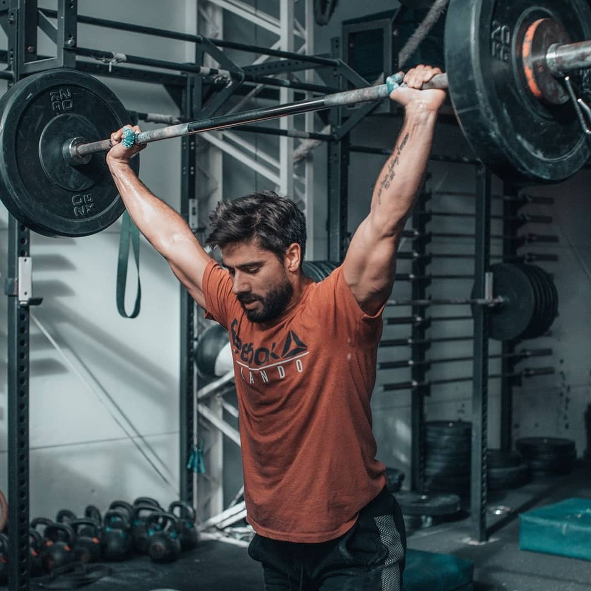

Sobre mí
Buenas, ¿comó va? Soy Juan Andres Antúnez de Apolo Masajes
Actualmente estudio Fisioterapia y estoy formándome en terapias manuales varias.
Apolo apunta a la importancia de la concientización del bienestar y la salud a través de la enseñanza y la utilización de las TM (terapias manuales).
Mi cometido es el cuidado del paciente, mi filosofía es el constante aprendizaje y mi motivación es el mismísimo camino a recorrer. 🤲
¡Te espero!